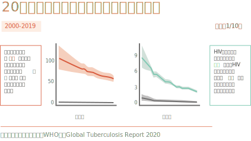
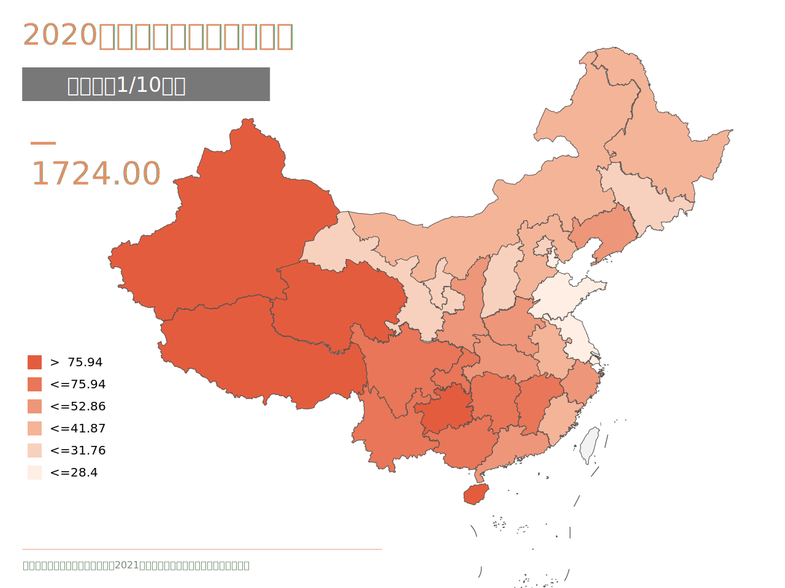

全球第二，中国是结核病高负担国家。在广阔的中国农村，肺结核仍是人民健康的一大困扰。
中国因为庞大的人口数量，总发病人数排在结核病高负担国家的第2位， 世卫数据指出，2020年我国结核病新发患者数估计为84.2万。
曾经，结核病无药可医，民间有“十痨九死”说法。 1949年，全国仍有肺结核病人2700万，每年有超过138万人死于肺结核，年死亡率达307/10万。
近20年，我国肺结核发病率、死亡率下降快。
这得益于我国肺结核治疗覆盖面广。在30个高结核病负担国家中， 中国的结核病疫苗覆盖率已达99%。2019年，我国已经实现了肺结核87%治疗覆盖率，94%治疗成功率。

高治疗覆盖并不意味着肺结核已经得到很好的控制，在广阔的中国农村，肺结核仍是人民健康的一大困扰。
肺结核发病率地区分布不均，西部高于东部。 西藏发病率居全国之首，高达150.13/10万， 其次是新疆（109.89/10万）、贵州（96.54/10万）、青海（93.85/10万）。

相比城市，肺结核高发于农村。 据2019年报告的肺结核病人职业分布数据，农牧民为最主要发病人群，占60.71％，房屋工人次之，占14.31％。
